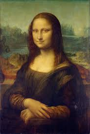
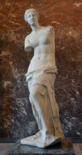
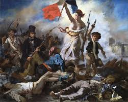
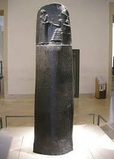

Acervo do Museu do Louvre
Explore algumas das obras mais famosas do acervo permanente
do Louvre:

Mona Lisa
Pintada por Leonardo da Vinci, é uma das obras mais conhecidas
do mundo, famosa pelo sorriso misterioso da personagem.

Vênus de Milo
Escultura grega clássica que representa Afrodite. Destaca-se
pela beleza e pela ausência dos braços.

A Liberdade Guiando o Povo
Obra de Eugène Delacroix simbolizando a Revolução de 1830.
Tornou-se um ícone da luta por liberdade.

Código de Hamurabi
Uma das mais antigas coleções de leis escritas, esculpida em
pedra. Documento histórico da Mesopotâmia.
O Louvre é um símbolo mundial da arte, história e cultura.
Estas são apenas algumas das milhares de peças que compõem seu vasto
acervo.